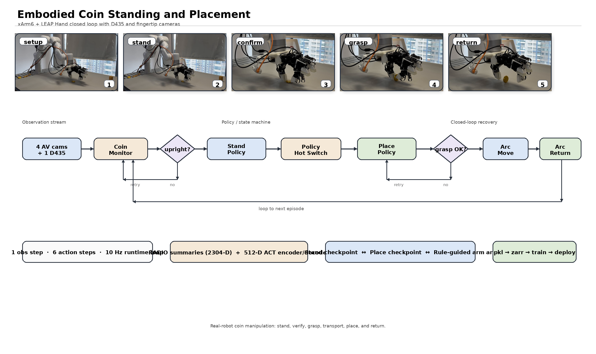
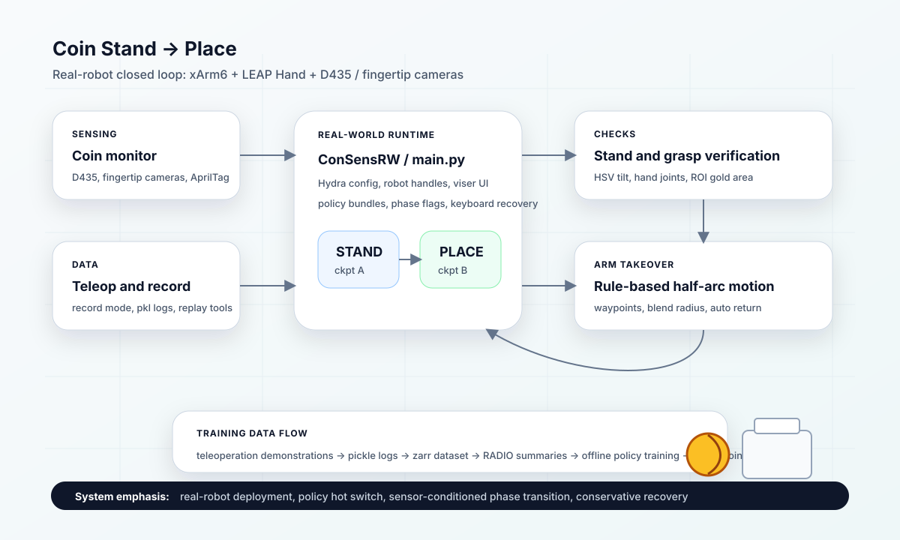

ConSens embodied manipulation system
Embodied Coin Standing and Placement
A closed-loop embodied manipulation task for standing a coin, confirming it with vision and hand-state gates, switching from a stand checkpoint to a place checkpoint, transferring the coin along a rule-based half-arc, and resetting automatically for the next episode.
Overview
This project builds the real-world side of ConSens for a coin manipulation task on xArm6 + LEAP Hand. The deployed policy path uses frozen RADIO summaries and an ACT-style 4-layer encoder / 4-layer decoder policy with a 16-step horizon and 6-step action chunk.
Stand detection combines HSV coin tilt with selected LEAP hand-joint thresholds. Once the coin is stable, the runtime hot-switches from a stand checkpoint to a place checkpoint, blocks the arm arc until ROI-based grasp verification passes, and then hands the arm over to a configured half-arc and reverse return loop.
The repository is split into ConSensRW for real-robot control, teleoperation, recording, camera and hand integration, and deployment; and ConSensPolicy for policy architecture, dataset preprocessing, offline training, and checkpoint evaluation.
System Architecture


Real Robot Stack
The runtime connects xArm, LEAP Hand, RealSense, fingertip cameras, AprilTag detection, Viser visualization, and keyboard recovery hooks.
Policy Hot Switch
The stand and place checkpoints are treated as preloaded policy bundles, so the pipeline switches phases by activating a bundle rather than rebuilding the model path.
Sensor-Conditioned Phase Change
The stand confirmation combines HSV coin tilt stability with selected LEAP hand-joint thresholds before entering the place phase.
Rule-Based Arm Takeover
The learned policies focus on hand behavior while the arm follows configured half-arc waypoints after the grasp is considered stable.
Policy Contract
The deployed ConSens policy consumes 5 views of frozen 2304D RADIO summaries, 8D proprioception, a 16-step horizon, and a 6-step action chunk through a 4-layer encoder / 4-layer decoder stack.
Inference Pipeline
- Start policy mode: load the stand checkpoint, wait for the keyboard trigger, and begin real-time policy inference.
- Confirm standing: run coin monitoring on camera frames and require the HSV tilt and LEAP hand-joint conditions to remain stable.
- Switch phase: publish the stand confirmation and activate the place checkpoint while holding robot state and clearing rollout buffers.
- Grasp before moving: use LEAP joint thresholds and ROI-based gold-pixel checks to detect whether the coin is actually between the fingers.
- Move and place: execute a configured xArm half-arc while the hand policy keeps the grasp, then continue the place policy until the hand opens.
- Return and loop: run the reverse arc back toward the start state and switch back to the stand checkpoint for the next episode.
Data Flow
Collection
mode=record uses teleoperation and recorder utilities to store per-episode pickle logs with current RGB, joint values, tag poses, and target actions under logs/.
Conversion
pickle2zarr.py converts recorded pickle directories into zarr datasets with data/obs/rgb_images, data/obs/all_qpos, data/obs/tag_ori, and data/actions/original_actions.
Training
ConSensPolicy trains the policy with RADIO visual summaries and Hydra settings under consens/configs, including the 5-view coin contract in setting/coin_consens.yaml.
Deployment
TrainWorkspace.run_eval() loads checkpoints for ConSensRW/main.py, which sends policy actions to hardware.